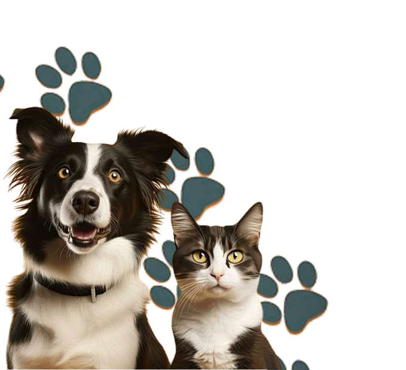

Ajudando você a encontrar seu amigo de quatro patas
Em todo o Brasil a procura e resgate dos nossos companheiros peludos

Em todo o Brasil a procura e resgate dos nossos companheiros peludos
Desde 2018 ajudando tutores a encontrarem seus pequenos companheiros, o MapaPet tem como objetivo encontrar animais perdidos e abandonados e proporcionar a eles um lar digno. Por meio de publicações e divulgações da nossa Instituição e comunidade podemos fazer a diferença a esses animais. Mais do que uma ONG, somos uma família em busca de transformar vidas com nosso trabalho impulsionado por cada usuário.


Tutores conectados

Pets encontrados

Recuperação nas primeiras 72 horas
Publique o anúncio gratuitamente
Notificações em um raio de 30 km
Aumento do alcance
Ampliação da busca para 100 km após 25 horas
Seu animal de estimação foi encontrado
Mais de 8.000 famílias ajudadas

São Paulo - SP
Reencontrado

Belo Horizonte - MG
Reencontrado

Belo Horizonte - MG
Reencontrado


.png)


SEJA UM PATROCINADOR
As denuncias serão 100% anonimas.
Lei de Crimes Ambientais (Lei nº 9.605/1998)